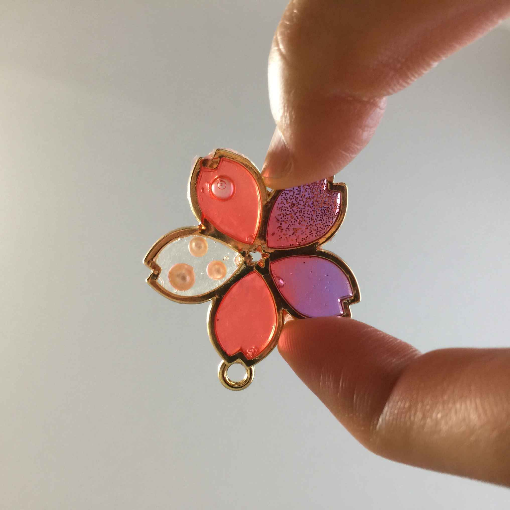

| Chocolate vol.16 | |
| 鈴木詩織 | |
| (2018) | |
Chocolate vol.16
二〇一八年七月一日
「好きなものを発信していけば、必ず同じものが好きな人にヒットする」「きちんと発信していけば、ちゃんと届けるべき人に届けられる」という言葉を信じて二年ほどブログを毎日投稿してきたけれど、ほとんど誰にも届いていませんでした。アクセス解析 や SN S のエンゲージメントを見たらその事実を受け入れるしかなく。
私が無能なのか、それとも世の中そんなものなのか。世の中ってこんなにも報われないものなのか。
始めた当初思い描いていた成長曲線を大きく下回っている今、もどかしくて焦ってしまうことはよくあります。理想と現実のギャップに落ち込むこともよくあります。
焦ったところで答えが出るわけでもなく。結果が出るわけでもなく。だから結局「今日も作品を書くか」ということにしかならない。
ただそれでも、書き続けて事務所の仕事もこなしている私は、それなりに「強い心の持ち主」なのかなとも思います。自分に自信がある方なのかもしれません。
「思うようにいかない」と嘆いたところで、思うようにいくわけでもなく。思うようにいかないならいかないで、私は走り続けるほかなく。
時々折れそうにもなるけれど、それでもまだまだ続けられそうです。
そう簡単にくたばらないよ、私は。
大学では経営学を学んできました。あまり優秀な学生ではなかったけれど、自分には相性のいい学問だったのかなと思います。今個人事業主として仕事をしているわけだし。「個人事業主」って「社長は私、そして従業員も私」という会社を経営しているようなものなので。
会社を辞めてこの仕事を始めた時には改めて経営学の関連書籍を何冊か読みました。今でも時々気になったものを見つけては読んでいます。
「経営学を学んだことは決して無駄ではなかった」
卒業してからもなんだかんだ言って経営学に触れようとしている自分がいる。何か困ったことがあれば経営学の本を紐解いている自分がいる。受験の時に経営学部を選択していなければ、こんなことにはならなかった。あの時はまさか自分が個人事業主になるとは思っておらず。にもかかわらず、今意識としては経営者になっている。そう思うと何事も学ぶことには意味があるのだと思えてきます。
......とはいうものの、私のビジネスは思ったように成長しておらず。なかなか思った通りにやっていくのは難しいようです。
大学四年生の夏ごろ。私はある授業を受けていました。一般教養的な授業ではなく、経営学に関する授業です。その頃には卒業に必要な単位も取りきっていました。私は自分の興味のある授業だけをとって大学に通っているという状態でした。根がどケチなので「せっかく大学生として大学に（親が）金を払っているのだから、元を取らなければ」という心づもり。
しかしその大学四年生卒業間近の夏の授業で私は衝撃的なことを教授に言われました。
「経営って所詮運だから」
「経営学の授業で、四年生の前で、それ言っちゃう？！ いやいや確かに今この教室に四年生私しかいないけどさ！ それ言っちゃう？！！！？！」
私はかなりショックでした。しかし授業を受けていけば「そーだよね、運だよね」と納得するしかなく。
時代によって環境は変化する。その環境の変化に適合できた人間が、生物が結局生き残れるもの。単純に弱いものが滅び、強いものが生き残るというものではない。会社も社会の経済環境に適合できた会社が生き残る。......授業の内容はそういうもので。
いやいや、確かにそうかもしれないけどさ。私四年間ろくでもない学生だったかもしれないけど学んできたよ。それは一体何だったのさ。..................
ただ、教授は最後に、
「だからと言って何もしないでいいというわけではない。環境に適合して生き残るために知恵を絞るのが人間だし、知恵を絞れば生き残れる確率も高くなる。そのための経営学だ」
とも言ってくれました。すんでのところで私は助かったような気がします。
確かに会社経営って運なのかもしれません。それでも経営学を学ぶことには意味があります。
昔読んだ会社経営の本にも書いてありました。
「走っている間に経営者は野生のカンが鍛えられていく。走ってないとカンは鍛えられない」
経営学なんて、所詮は後付け理論です。ある企業の成功・失敗を全部終わってから分析しているだけ。経営者の中には「経営者が本を書いたら会社が落ちる」というジンクスもあります。本を書く時点というのは会社経営が《最も》うまくいっている状態。だから本を書いたら会社の売り上げは落ちるしかないという話。経営学なんていうのは所詮「全部終わってからの分析結果」でしかなく、経営学としてまとまると経営は終わります。
それでも経営者は経営学を学ぶ意味があるのだと、経営学を学び「社長自分従業員自分」という会社を経営している私は思います。
経営学を学ぶことは、経営のカンを鍛える筋トレのようなもの。会社経営はひたすら思考しなければなりません。たくさんのことを考えなければなりません。そのためには考えるための頭を鍛えなければなりません。頭を鍛えるための経営学です。
そしてもう一つ、私は経営学を学ぶことには意味があるのだと思う理由があります。それは私が歴史オタクだからこそ考えることかもしれません。
「歴史は繰り返す」
モデルをしていて、いくつかのショーに出させてもらうと、ファッションの流行の特徴もくるくると同じところを回っていることが分かるし、私が感じなくてもそんなことはファッション業界ではよく言われていること。そして歴史を勉強すると、「この事例は過去にもあった」ということも分かってくる。
となってくると、経営を取り巻く環境も常に変化はしているけれど一定期間で同じことを繰り返しているということも分かってきます。
過去に起こったことを分析すること。歴史も経営環境も同じことが繰り返しているのであれば、歴史を学ぶことにも経営学を学ぶことにも大きな意味があるのだと思います。
海を割ったり、水の上を歩いたり、病気を治したりと、奇跡を起こしてきた人が古にはいました。
私も一度だけそんな奇跡を起こしたことがあります。
中学二年生の体育大会でのことでした。
大会中突然雨が降り始めました。土砂降りでした。生徒も先生も保護者もびしょ濡れ。大会は一時中断されるほど。
しかし雲の様子を見れば、それが通り雨であることは分かりました。
中学生だった私は天に向かって両手を伸ばし、叫びました。
「雨よ止めー！ 太陽よ現れよー！」
入った瞬間に本当に雨が止んで太陽が現れました。
いくら「この雨はすぐに止む」と分かっていたとはいえ、まさか言った直後に止むとは。
周りのクラスメイトたちからは、
「詩織ちゃんスゲェ......神だ」
と、言われました。
後にこの話を友人にしたところ、
「そのあと『雨よ降れ』と言って本当に降らせたら教祖になれたね」
さすがにそれは無理。
でも、「教祖」か......実はちょっと憧れる職業（？）ではあります。
こうやって文章を書いて発信し続けていれば、いつか教祖になれるかな？
一応この中学生の頃の実績もあるわけだし。「教祖」としての素質が私にはあるかもしれません。
ミスコンに出て、今は旧姓ではあるものの「鈴木詩織」と本名と顔をネットに公開してしまいました。会社も辞めてモデルも始めてしまいました。「鈴木詩織」として本も出してしまいました。
消そうと思えば消せるものもあり、何もしなければ多くの人は私を忘れていくのでしょう。
でも、私としてはもう引き下がれないところまで来てしまったような気がします。
十年後、例えば子供ができて「ママ友」などの付き合いがあるかもしれません。
「鈴木さん十年前はミスコンに出てモデルもやってたんだって」
私が何も言わなくても、そういう目で見てくる人はいます。お節介なことにいちいち調べてくる人もいます。狭い社会の中、そういう形でしか他人に興味が持てない人もいます。私も自分のお母さんがそういう目で人を見たり逆に見られたりして葛藤しているのを見てきました。
「鈴木さん十年前は......」
この後に続く言葉が「さすが、今も輝いてるね」でありたい。「十年前はああだったのに今はしょぼい」とか言われたくない。
ミスコン出場者の業とでもいうのか、一度「ミスコンに出ていました」という事実が出来上がってしまったらそこをどんどんアップデートしていく努力をしていかなければならないのだと思います。広く世間に自分のことを知ってもらうためではなく、どうしても所属せざるをえないより小さなコミュニティで心地よく生き残るため。
前 の Faceboo k ですら私はそれを感じてきました。ミスコンから身を引いて作家として活動していた中で、コメント欄に「鈴木さんまだ活躍してたんですね。これからも応援してます」と書かれたことがあります。失礼だとか全く無自覚でこういうことを書いてくるのがもはやすごすぎる（褒めてない）。しかもそれで「これからも応援してます」とかどこから目線ですか？
それでもこうやって言われてしまうのは仕方のないことで（とは言うものの、その月私はモデルとしても作家としてもたくさんの仕事があったけど。本人が何も知らなかっただけというのもあるけど）。こうやって言われるのはとても傷つくし、腹も立つし。こうやって言われるのを防ぐためには自分で努力するしかなく。だって相手に言ったって相手がそもそも「失礼」とかそういうことを考えられない馬鹿なんだもん。
自意識過剰かもしれないけれど、私はここまでやってきたのだから自分の人生をハッピーエンドで終わらせなければならないのだと思います。常に自分をアップデートして世間に、特に所属せざるをえない小さなコミュニティに見せていかないと、示しがつかない。
「夢って叶うもんなんだな」
それを証明していかないと。広い世間にではなく、狭い世間だからこそ。
ここまでやってきてしまったのだから、「夢を叶えたストーリー」を狭い世間に見せることも私の義務なのではないかと思っています。
嫌なことを我慢してやっている自分のことを「誇り高い人間」と思っているような馬鹿がたまにいます。そういう馬鹿は頭のいい人が「こうするともっと楽にできますよ」「ここのところでこういう意識を持つと嫌なことも無くなりますよ」と言うと、「誇りを傷つけられた！」と怒り出す。そして明らかに効率の悪いやり方をぐずぐずと続けようとするから、結果としてはみんなの足を引っ張る。しかし本人たちはそのことに気づいていない。
「私って本当に頑張り屋さん」
とか思ってる。
「頑張る」ってそうじゃない。「仕事への誇り」は「嫌なことを我慢すること」ではない。しかし頭を使わないことに慣れきった人たちは、そこまで考えたくないから「我慢することは誇り高いこと」と思ってしまう。
こういう「頑張ること」を勘違いしている頭を使わない人と一緒に仕事をするのはまっぴらごめん。というよりも私は頭を使おうとしない人が大っ嫌いです。
......しかしこういう脳みそが退化しているような人は、実はこの世の中ものすごく多いということに大人になってから気づきました。それこそ二〇一四年に会社に入社した時くらいから。会社を退職して、モデルやら作家やらをやってくる中でもそういう人に遭遇して傷つけられるし。こういう人ほど、普段から頭を使う癖がついている人の足を引っ張るんですよね。露骨に嫌がらせをしてくることさえあるし、ひどい時にはいじめだってしてくる。
本当はこういう人たちが会社を潰したり、何かに取り組んでいる人を潰したりするんだけど。本当はこういう人たちが組織にとって社会にとって害悪なんだけど。
私は疲れたよ。こういう頭を使わない人たちによって傷つけられて。
「誇り高い人たち（笑）」をうまくかわして生きていきたい......。
私はお風呂に入ってしまうと一気に睡眠モードになります。お風呂から上がったら何もしたくなくなる。文章を書く気もなくなるし、家事もしたくない。布団の上でストレッチをして読書をするくらい。
寝る時間は夫と一緒。二人とも寝室に揃ったら部屋の明かりを消します。私たちはそれぞれの布団を敷いて寝ています。
セックスのない夜はその暗闇の中で軽くおしゃべりをします。私が夫の布団に入ってハグとかキスをしながら、ちょっとだけ笑えるような話を。
私「イベントコンパニオンの仕事で教えてもらったんだけど」
夫「うん」
私「最近の養鶏場ではたまごを使ったスイーツを販売するところも増えてるんだって。牧場でソフトクリーム売る的な」
夫「へぇ」
そんな毒にも薬にもならないどころか消化もされずに体外に排出されそうなくだらないネタを話します。
夫も「へぇ」とか「ふぅん」とか言って。
そんな話をしながらハグとかキスをして。
時々お互いの右手の指を絡ませて、手をつないで......いるかのように見せかけて突然始まる指相撲。お互い負けず嫌いだから、いかに相手に気づかれずに試合を始めるか、そして始まったことに気づいて防御するかで必死になります。
寝る前の夫の布団の中で過ごすこの時間が大好きです。
そして適当なところで「おやすみ。好きだよ」と言って、私は自分の布団に帰っていきます。
夫が「おやすみ」とだけ言ったら、「あれぇ？ よく聞こえないなぁ？？？」と言う。夫が「好き」というまで繰り返し続ける。時には夫のほっぺを指でつついたりもする。
そしてようやく「好きだよ」と言ってもらったら、満足して寝る。
そんな夜の習慣が私たちにはあります。今の所。
甘ったるいのは新婚なので許してください。
五月は私が仕事で忙しく、出張先のビジネスホテルで一人で寝ることが多くありました。出張じゃなくても土私が日に仕事があったりすると、土日休みのサラリーマンである夫は一人で旅に出てしまうので夜は私一人家でお留守番ということも多く。夫と暮らし始めて以来、一人で寝る夜が多かった一ヶ月でした。
一年前は一人で寝るなんて当たり前のことだったのに。十ヶ月一緒に寝る夜を過ごしていたら、一人で寝る夜が寂しくて寂しくて。
夫婦の寝室に一人で寝るときは、こっそり自分の布団ではなく夫の布団で寝たりしていました。
久々に（一晩ぶりに）一緒に寝る夜はなんだかドキドキしてしまって。いつも通り私は夫の布団に潜り込んでハグとかキスとかをしながらなんでもない話をしたり指相撲をするわけですが、それもなんだか新鮮になってしまう。
新婚ですから。まだまだ熱々の仲良し夫婦ですから。こんな甘ったるい生活をしていても許してちょんまげ。
「イベントコンパニオン」という横文字で洒落乙な雰囲気を出してますが、「現場に行ってみたら業務内容がティッシュ・チラシ配りだった」ということも珍しくありません。もちろんモーターショーのような「かっこいい車の隣に立ってるきれいなお姉さん」という仕事もしたことはありますが、割と頻繁にチラシ配りもしています。
しかしなぜかこのチラシ配りが得意な私。クライアントさんの決めていたノルマを軽く突破してしまう。会期中にチラシの在庫を切らして、残り時間配るものがなくなってしまったということもよくある。
以前のクライアントさん曰く、
「時々鬼のようにチラシやらティッシュやらを配るイベントコンパニオンがいる。数々のチラシ配りの現場を渡り歩いてきたかのような。そういうイベントコンパニオンと一緒に仕事をすると『無理だろ』と思っていても在庫が切れる。......鈴木さん、あなたはそれだ」
展示会などのイベント会場でのチラシ配りとは、「会社の名前をできるだけ多くの人に知ってもらうこと」「ブースに入ってもらうこと」が目的です。とにかく多くの人にチラシを配る。担当する会社との接点を作る。それが私たちチラシ配りイベントコンパニオンの役割だと思っています。
極論を言ってしまえば、例えチラシを受け取ってもらえなくても会社のことを知ってもらえたりブースに立ち寄ってもらえたりすれば私の仕事は上手くいったことになります。
イベントコンパニオンとして現場に行き、命じられた業務がチラシ配りだった時、私がこの現場に呼ばれた理由は「チラシを配ること」ではなく、「できるだけ多くの人と会社との間に接点を持たせること」です。
そのつもりでチラシを配る。だからチラシがはける。
「やりたいことを仕事にする」と思って作家だとかモデルだとかをするようになってからこの意識が強くなりました。むしろ嫌々仕事をしている時はお金をもらっていてもこんな考えにはならなかった。無責任ではあるし、前の勤め先には申し訳ない気もするけれど、そういうものなのかなとも思ってしまう。
仕事の目的が見えるから仕事が楽しいのか、仕事が楽しいから仕事の目的が見えるのかは分かりませんが。「目的を持って仕事をする」というのはとても楽しいことです。
「今やっている作業は何を目的にしてやっているのか」
そうやって一歩踏み込んで考えて仕事ができること。「楽しく仕事をする」というのはそういうこと。
「折れない」「腐らない」ということがとても難しいのだと知りました。
六月に閉じ た Faceboo k アカウント。一時期は友達も五千人いたけれど、本当の意味で私を応援してくれた人はほとんどいませんでした。ミスコン の we b 投票も無視、本を出しても無視。にもかかわらず「応援してる」という声はかけられる。それが虚しくて虚しくて、悲しくて悲しくて。私が何をしたいのか、私の目的は何なのか、そういう本質的なところに全く気づいてもらえず、見ようともしてもらえず、それでもかけられる「応援してる」は次第に私の中で「無理だ」という気持ちを掘り下げていきました。
だか ら Faceboo k を閉じることにしたんです。これからも書き続けるために。
志を掲げてやってきたことに、世間からの反応がなければ落ち込むのも自然なことでしょう。折れても仕方がない。
友達五千人の中で、 「 we b 投票が始まりました。投票よろしくお願いします」と言って集まった票数は四十票。この時点で私はもっと腐ってもよかったと思うし、諦めていたとしてもおかしくなかったとも思います。
それでも私は続けている。
もはや鋼のメンタルと言ってもいいでしょう。
いつまで続くのか分からないけれど、この期に及んでもまだまだ「こうしたらいいんじゃないか」という案が湧いてくる。相当しぶとく簡単にはくたばらない造りになっているみたいです、私は。
『三国志』を書くこと、『項羽と劉邦』を書くこと。他にも書きたい作品はいっぱいあります。そういう作品を書いて、たくさんの人がたくさんのことを感じて、その積み重ねで社会全体が明るく変わっていったら......なんていうのが私の志です。
「一寸先は闇」なのはみんな同じ。同じだけど私の場合今までやってきたことの量と派手さの割に、ちょっと屈辱的なことが多すぎた気もします。自分でも満足のいく結果が出せているとは思いません。
他人に「行動していれば夢は叶うよ」なんて胸を張って言える立場でもなく。むしろそうやって言って他人を励ますのは無責任なくらい現状としてはしょぼいのだと、分をわきまえています。
だからこそ、私は日々の生活で時間を無駄にはできない。自分の目標を果たすために、夢を叶えるために動き続けなければならない。そのために自分がやると決めたことを毎日こなしていくしかなく。
今までなんだかんだ言ってそうやって毎日をコツコツ過ごして目標を達成してきたのだから、ここは馬鹿の一つ覚えのように自分を信じて「毎日やること」と決めたことを繰り返しやっていくしかない。
屈辱まみれの今の日々を振り返り、その時に書いたこの文章を見て、「そんなこともあった」と笑える日を作るために。
そして「鈴木詩織ですらこんなことができたんだから、私にもできるだろう」と思われるようになるために。
ありがたいことにこのご時世、自分の作品を書いて発表する場所はたくさんあって。やろうと思いさえすればいくらでも作品を発表できてしまう。
「こうして時勢と環境に恵まれたからには、書かないわけにはいかない」
そういうわけで、二〇一八年六月からはいよいよ『項羽と劉邦』を書くことに決めました。七月からとりあえ ず kindl e ストアにて連載していきます。この数ヶ月間そのための準備をずっとしてきました。六月中旬から物語を実際に紡ぎ始めるということです。
これでやり遂げて「夢が叶った」と言うのもいささか強引な気もしないでもないけれど、そもそも夢ってそうやって叶えていくものなのだとも思います。
待ってても仕方がない。強引にでも「夢が叶った」という既成事実を作ってやる。
それが私の夢の叶え方だ！
なぜミスコンに出たかって、元から私は作家になるのが夢で、作家として活動する上で、ただの「作家」じゃなくて、「美人作家」と言われた方が面白い人になれるような気がしたのでミスコンに出ました。ミスコンを踏み台にして作家をやっていくつもりでした。「作家になりたい」と言えば「応援してる」とたくさん言われたから、本を出せば買って読んでもらえるだろうとも期待しました。
しかしいざ本を出すと、「応援してる」と言っていた人たちは消えました。正確には「すごいですね」などの言葉はかけられたけれど、そう言ってくる人ほど本を買おうとはしませんでした。
友達には「当たり前じゃん。みんな詩織ちゃんの外面しか見ないよ。内面なんか見るわけないじゃん」と言われました。他にも「言ってることがめちゃくちゃだ」と言われたこともありました。
私には未だになぜそれが「当たり前」なのか、「めちゃくちゃ」なのか分かりません。皆「応援してる」って言ってたじゃないですか。それで私が本を出したら無視って、じゃあその「応援してる」は一体何を応援していたのでしょうか。
むしろミスコンとは外見だけではなく内面も競う大会です。友達が言った通り、多くの人が私の外見しか見ておらず内面を見ていないとしたらミスコンの本質が世の中の観衆に伝わっていないとも考えられます。
「応援してる」と言ってくれた人たちがいた中で「ミスコンを踏み台に作家をやる」という考え方がなぜおかしいのか、馬鹿にされるのか分かりません。
むしろ「応援してる」と言っておきながら私が本を出した時に無視をした人たちの方が頭がおかしいのではないか、言ってることがめちゃくちゃなのではないかと思ってしまう。
夫は私の言っていることをよく理解してくれて、「『応援してる』と言っておきながら本を出した時に沈黙するヤツは頭か性格が悪い」とは言ってくれるけれど。
ミスコンのステージ上でのスピーチで「人に希望を与えられる人になりたい」と言えば拍手喝采を浴びます。しかしミスコンのステージ上で「私は人に希望を与えるために、文章を書きます」と言えば笑われる。後者の方が目的と手段が明確かつ具体的なのに。後者の方が前者よりも「人に希望を与える」という目的を果たせる可能性があるというのに。
「大衆とは考えが深すぎる内容にはついてこないものなのだ。そこのところを理解していないから、詩織は売れないんだ」
と、夫は私に言いました。
四年間ミスコンだとか作家だとかモデルだとかをやってきたけれど、本当の意味で人から「好き」と言われた感覚がありません。「応援してる」とたくさんの人に声をかけられたミスコン の we b 投票で集まった票は四十票。その 頃 Faceboo k の友達は五千人いたのに。本を出しても売り上げが０ということも珍しくありませんでした。出す前はあんなに「読みたい」と言われてたのに。結果残ったの は we b 投票もしない本も買わないと態度を決め込んだ人たちからの「頑張って」という励ましの言葉でした。その励ましの言葉は私に「夢は叶わないよ。無理無理」と言っているように聞こえました。
私は一度腕を振るえばたくさんの人を動かせるような英雄ではない。それどころか「適当に優しい言葉をかけておけば、それで満足するような人間だろう」と軽く見られて馬鹿にされている。英雄どころの話ではない。道化ならばまだいい方。人としても見られていなかったのかもしれません。
私は虚しくなりました。
それでも諦められず、まだまだしぶとく文章を綴っています。「一人でも読んでくれる人がいればいい」そういうつもりで、割り切るようにして。
ただ、あの時の寂寞がどっと私に襲いかかってくることはよくあります。
この寂寞を、私は他人に感染させたくない。
私自身が他人をこんな寂寞に飲ませるような人間になってはいけない。
だからこそ、私は言葉ではなく、行動で人を支える人間になることにしました。
まだまだ未熟ではあるけれど、自分の出来る範囲で目一杯の行動をして、人を支えていこうと。
頭も使わず、ぐずぐずしているだけで、何も行動しようともしない弱者が私は嫌いです。そういう弱者ってこちらが「こうしたら」などの状況を良くする案を出しても文句を言って何もしようとしないどころかこっちの足を引っ張ってくるし。
子供、老人、労働者、障害者、女性......などなど。これらにカテゴライズされる人の中にはもちろん例外も多いけれど、特別な思いやりを必要とする人もいます。そういう人たちに対して配慮をするのは当然だし、私も別に腹が立つとか思っているわけではありません。私も電車の中で席を必要とする人を見かけたら座席を譲るし、募金も積極的に行うようにしています。
でも、私がやってあげられることにはもちろん限度があります。私だって自分の生活があるし、夢もあるし、人生がある。弱い人のためにあれもこれも全部やってあげられるわけではありません。
それに全てをやってあげることが必ずしも「いいこと」ではない。弱者に対する思いやりというのは、その人が自分の力で生きられる環境を作ってあげることのことを言うのであって、「全部やってあげる」ということではない。「全部やってあげる」というのは思考が停止しているだけです。何も考えていない、強いて言うなら「自分はいい人アピールがしたい」という自己中心的な目的しか考えていない。
私がしてあげられること。
今大きなテーブルの向こう側の端にリンゴが置いてあるとします。
そのリンゴを欲しい人に対して手に入れるためのアイディアを授けること。それだけが私にできることだし、それこそが「思いやり」だと思っています。
テーブルをぐるりと歩いて回って取りに行くこともできる。テーブルを傾けてリンゴをこちら側に転がすことだってできる。長い棒を使ってこちらに引き寄せるというのもアリかもしれない。そういうことを教えてあげるのが私の役割だと思っています。
なんでいちいち他人のために私がリンゴを取りに行ってやらなければならないのか。私はそんなことしたくありません。私だってリンゴ欲しいし。
弱者に対する思いやりというのはリンゴを取ってやることではなくリンゴの取り方を教えてあげること、一緒に考えてあげることです。「あのリンゴを取ってきて」と言ってくる弱者に私がしてやれることはありません。
初めてミスコンに出ることが決まった時、浮かれていたのもあって「自分には『何か』を成し遂げるだけの能力がある」と思っていました。そうやって浮かれてしまった結果、ここまで来てしまいました。人に自慢できるような成果は何も出していないけれど、今でもあの時に得た自信は大切にしています。「自分には『何か』を成し遂げるだけの能力がある」と今でも思っています。
そしてあの頃同時に、「私は天から与えられたものを社会に還元します」とも誓いました。
ミスコンに出るだけの容姿を、私は天から与えられました。
毎日文章を綴るだけの文才を、私は天から与えられました。
往生際の悪さを、私は天から与えられました。
支えてくれる夫を、私は天から与えられました。
............
「天から与えられたもの」を数えると、数え切れないほどのものが私にはありました。そして今もその数は減らないどころか、増えているような気さえします。
それらを全部社会に還元する。天から与えられたものをありがたく受け取りはするけれど、それを社会に還元する。初めてのミスコンのステージに立つための準備をしながら私はそう誓ったし、今でもその誓いを守るために日々仕事をしています。
「天は二物を与えず」とは言うけれど、私は天から二物どころかたくさんもらいました。他の人が天からどれくらいもらっているのか知らないけれど、私は自分のことを「たくさんもらった人」と思っています。
もらったものは受け取って、幸せに生きるために、そして社会に還元するために使わせていただこうと思います。
最近感性が鈍っているような気がします。以前よりも心が震えなくなったというか。物を見ても批判的に見ているというか。自分でも「私今どこから目線でこれを見たんだろう」と思ってしまうくらい、気がつくと対象に向かってああだこうだとネガティブな面を探そうとしている自分がいる。
夫曰く「年をとったんだよ」とのこと。確かに年をとると感性は鈍るものとも聞いてはいます。しかもそれは意外と早く、三十歳前後から始まるものとも。人間三十あたりになると頭が一気に硬くなっていくと。私も二十八歳。あと少しで三十歳です。もう頭が硬くなって感性が鈍くなり始めているのかもしれません。
容姿に関しては「いつまでも若々しくいよう」と言うつもりもなく。常に年相応であればいいと思っています。
でも感性はそうは思わない！！！！ いつまでもピッチピチの感性でありたいと思う。（贅沢言えばピッチピチの感性を支えるだけの健康もあってほしい）
若さを武器に戦ってきたミスコン時代から、私の「老い」に対するスタンスはそんな感じで。割と昔から「容姿は老いてもいいけど感性は老いてほしくない」と思っていたりはする。
だからこそ、三十を目前にして感性が鈍ってきていることにはものすごく危機感を覚えています。このままだと私は老いさらばえてただのしなしないがいがババァになってしまうかもしれない。
衰えかけている感性を叩き直すために、最近は考える量をあえて増やしてみたりしています。いろんな文章に触れて、そのことについて深く考えてみる。この文章で私は何を感じたのか。そして私が感じたことはアウトプットをしてみたり。
そして私は「読者は自分の都合よく文章を読むもの」ということを知っているので、人の文章を読んで自分が何かを感じた後は「筆者は何を伝えたくてこの文章を書いたのか」ということを考えてみる。ここにはただ感じるよりもより心の筋肉が必要になってきます。
こうして感じ、考える量を増やして感性を鍛え衰えるのを必死に防ぐ！！！
後は新しい趣味のようなことを始めてみたり。三日坊主になってもいいから、とりあえず何か新しいことをしてみるということを最近はしています。
そのために百均に行く。百均のハンドクラフトコーナーを歩いて手芸とか工作とかをしてみる。五月は 「 U V レジン」というものをやってみました 。 SN S で見たことがあって一度やってみたかったことで、初心者は百均でも楽しめると知って挑戦。

百均は安く新しいことができるので今後も時々通うことにします。
そして六月に入ってからメンタルが一気に落ち込みました。「自分は何をやってもダメ」という意識が抜けない。「でも」「だって」「どうせ」のオンパレード。
それが募り募って、ある夜大きな声で泣いてしまいました。夫の前で泣きました。
「悔しい！ 何をやってもダメなのが悔しい！ なのに他の人はみんなうまくいっているように見えてしまう。頭では『みんなも頑張ってるんだ』ということを分かっていても、それでも自分がダメなように見えて悔しい！」
年甲斐もなくワーワー泣いて、泣いて、肌がカサカサになるまで泣きました。
そしたらあら不思議。翌日か ら SN S などで他人の幸せそうな投稿を見ても、前日ほど批判的に見なくなっていました。
結局自分の劣等感を認めることが私には足りなかったみたいです。自分の劣等感を認めないということは感性を鈍らせる恐れがあるのだと学びました。
とにかく、最近は感性が鈍っていることに危機感を覚えていました。
意味があるのかないのか分からないけれど、とりあえずこれからも感性を鍛えるトレーニングを思いついたら続けていこうと思います。
別に悪くはないけれど、めちゃくちゃいいわけでもない私の学歴。東海三県で就職活動をするなら高確率で「賢い人」という扱いは受けてきました。しかし全国区となるとどうなることやら。
テレビを見ていると「インテリキャラ」と言われる人が出てきます。東大京大早慶上智卒ともなると「インテリ」というのも分かるけど 、 MARC H 関関同立くらいなら黙っておいた方がいいような気がしないでもない。世間的には決して低い学歴ではないけれど、テレビの中で「インテリキャラ」としてやっていくにはちょっと足りない学歴なんじゃないかな。
だから私も今ま で SN S をやっていく中で自分の学歴は明らかにしてきませんでした。あらゆるプロフィールの学歴欄は未記入。
自分の学歴が作家やモデルをやっていく中でインテリキャラを自称するには中途半端だという自覚があるから、私は学歴に関しては黙ることにしました。
しかしここで「インテリ」と呼ばれることを諦められないのが私のずるいところ。なんだかんだ言って他人からはよく思われたいし、そういう扱いも受けたい。
だから私は学歴ではなくその他の要素でインテリぶりをアピールすることにしました。
このポリシーは二〇一四年に初めてミスユニバースに挑戦した時から決めていたこと。鈴木詩織とし て SN S をやり始めた時から「自分の学歴は伏せた上でインテリと思わせる」という戦略を取ってきました。
元から私は好奇心旺盛で、いろんな分野の学問に首を突っ込んではかじっています。読む本も小説だけでなくビジネスや科学など幅広く読んでいます。
ぶっちゃけ「インテリイメージ」は読んだ本についてブログに書くだけでできてしまうこともある。多くの人はブログの内容よりも「なんだか難しそうな本を読んでるからこの人は賢いんだ」という考えに至ってしまう。読んだ本についてちょこちょこっと書くだけで、大衆は騙せてしまうことがあるのだということは、この二年間ブログをやってみて分かりました。
だいたい、世の中の「インテリイメージ」ってよく見ると作りは単純。いろんなことを知っている雰囲気を出せばいい。知識をひけらかすのとは少し違う。話のネタに教養を挟み込む程度。そこに「インテリっぽさ」が出る。私はインテリキャラを作るために、日々のブログの中で独自の表現をベースに過去に学んだことをスパイスのように織り交ぜてきました。
もちろん、インテリキャラを作るために読んでもない本のことを適当に書いたり、知らないことを知ったかぶったりなんてしていません。今までにブログに書いてきたことは全部自分で読んだ本だったり、得てきた知識についてです。ブログを書くときには正確なことを書いているかどうかのチェックもしています。
これが私のインテリ戦略。表面的に賢いふりをして大衆を騙しているのか、本当に私が賢いのかはこれから分かることです。
みんな自分が傷つくのは嫌だから、嫌われないように必死になります。嫌われないように、人から「いい人だ」と思ってもらえるように優しい人を演じようとします。それは自分の身を守るための本能のようなもので、私も本心では思ってもいないのに優しい人を演じようとすることはよくあることです。傷つきたくないから人に嫌われたくない。だから「あの人は優しい人だ」と思ってもらえるように仕向ける。みんな日常の中でそんなことは当たり前のようにやっています。
それをやること自体は別に悪いことではありません。自分の身を守るための偽善自体は悪ではない。その場しのぎで優しい人を演じて、全体が丸く収まるのならむしろいいことでしょう。
ただ、「優しい人」を演じる「だけ」というのは時に人を傷つけます。偽物の優しさは口先だけで行動が伴わないもの。本人としてはその場しのぎで周りに自分のことが「いい人だ」と思ってもらえればそれで満足なのかもしれないけれど、実はその優しさで人を傷つけていることもあるのだということにもっと多くの人が気づいてくれたらいいなと思います。
人間というのは人から優しい言葉をかけられたら期待してしまうもの。頭では「真に受けてはいけない。その場しのぎの優しさも生きていく上では誰しも必要」と分かっていても、それでも優しい言葉をかけられれば「この人は自分のことを分かってくれるかもしれない」と期待してしまうものです。
口では優しい言葉を使い、行動の伴わない「優しい人を演じているだけの人」としては、こうやって期待してくる人間が鬱陶しくて仕方がない。
そして演じているだけで根っこは別に優しい人なわけではないから、本気で期待されたら、
「言われたことを真に受けるなんてバカなやつだ」
と、突き放す。
そういう「優しい人を演じているだけの人」というのは実はこの世の中にはたくさんいるのだということを、二十八歳になってようやく気づき始めました。
そして本当に優しい人は、そうポンポンと優しい言葉を言わないで、言ったら言ったで行動に移すものだと思うようになりました。
私もまだまだ人間としては未熟で、偽善でしか人に優しくできない人間です。人に優しくするときには多少の下心があることも珍しくありません。直接本人から何かを求めなくても、「ここでいいことをしたらこれから先自分にも何かいいことがあるかもしれない」と期待してしまうことさえあります。
ただ、私はたくさん傷ついてきました。「あなたを思って優しくしたい」というわけではなく、「自分が人からいい人と思われたい」という自分のことしか考えていない動機だけで優しい言葉をかけてくる人を相手にするのは疲れました。自分のことしか考えていない偽りの善意にたくさんたくさん汚されてきました。
だからこそ、私はそういう人にはなりたくないと思いました。「他人にいい人と思われたいから優しい言葉を言うだけ言う」人にはなりたくない。優しい言葉を言うからには行動できる人間でありたい。優しい言葉を言わなくても優しい行動ができる人間でありたい。
たくさんの「行動の伴わない優しい言葉」に傷ついてきた、汚されてきた私だから、他人にはそういうことをしたくない。
いちいち偽善っぽいことしかできない私ではありますが、少しずつ行動に心が伴うように成長していきたいです。
そのために、最近少しずつ匿名で「優しいこと」をしています。
『項羽と劉邦』を書くにあたって、中国の古代思想をおさらいしました。一時期中国の思想だとか歴史だとかを読み漁っていましたが、改めて。そのために五月は『老子』も読みました。
歴史小説を執筆するにあたって当時の思想を学ぶことは当然といえば当然かもしれません。それこそ専門家レベルの知識は必要だとは思います。それでも私は『老子』だけでなく他の思想に関する本も、「中国古典専門家」として読むのではなくあくまでも「楽しんで読む」ことに重きをおきました。読んで自分なりにたくさん考える。現代に生きる自分ならこの思想をどう活かすかを考える。
中国史や古典の専門家として専門書を書くのであればその読み方は間違っているのかもしれません。しかし私が書きたいのは小説です。それも「有意義な暇つぶし」になるような小説。ぱぱっと読めるけれど、深みのある小説。いろいろ考えたくなるような小説。
だから今執筆にあたって改めて歴史を勉強するときは「時代に忠実に学ぶ」のではなく「現代に生きる一人の人間として学ぶ」姿勢を大切にしてきました。『老子』などの思想だけでなく、歴史書を読むときにも。
そしてさらに私は少し前まで「成功の法則依存症」でした。世の中に溢れる「成功者の法則」だとか「引き寄せの法則」だとかの本を読み漁って、満足して、しばらくしたら「もっと効きの強いのが欲しい」とか言いながら新しい本を買って読む......ということの繰り返し。
書店に行けば成功の法則なんて本はゴロゴロ売ってるし、出版業界では次から次へとその手の本が作られている。世の中全体が「何かにすがりたい」と思っているのでしょう。私のような依存症に陥っている人もたくさんいるのでしょう。だから作られるし売られるし売れる。
私自身は「私は依存症になっている」と気づいて成功の法則だとかからは距離を置いてはいますが、あれらの本に書いてあったことは決して嘘だったとは思っていません。本を書いている人や本の内容を胡散臭いとはあまり思わない。むしろ私と同じように依存症レベルで読み漁っている人の言う「感謝」「謙虚」「思いやり」がものすごく胡散臭い。
謙虚になること、物事に執着しないこと。執着すると逆に欲したものは逃げていく。ないものを「ないない」と言っていないで、今目の前にあるものを見るということ。そうしていけば成功する。そうしていけば幸せになれる。云々。「成功の法則」だとかに書いてある決まり文句。
......ということが、多少の表現の差こそあれ『老子』にも書いてありました。
かつての成功の法則依存症患者が『老子』を読むとこういう解釈になる。『老子』を読みながら「あ！ これは成功者の法則にもあった！」ってなる。
こういう解釈が生まれるところに素人の古典読みの面白さがあるのだと思います。数千年前の思想を強引にでも現代に生きる自分なりに解釈しようとする。だから面白い発想が生まれてくる。
「『老子』って成功の法則にも通じている」
この誰もが不安を抱え、何かにすがりたくて仕方がない世の中で、私が古典を現代人なりの強引な解釈をし、その解釈で歴史小説を書く。
正確なことは書いていないかもしれないけれど、だからこそ面白い作品が書けるし、意味があるのだと思います。
歴史小説は人々に知識を授けるものにあらず。楽しませるためにあるもの。思考させるためにあるもの。もちろん間違ったことや適当なことを書いてはいけないけれど、歴史の正確な読み解きが必ずしも歴史小説に重要なわけではない。
私は古代中国の歴史や文化の専門家ではないし、なるつもりもありません。歴史小説を書く人間としてそれでいいと思っているし、だからこそ小説が面白くなる。
そう信じて二〇一八年六月から執筆を開始し、七月から長年の夢だった『項羽と劉邦』の連載を始めていきます。
四年間、ミスコンに挑戦して、会社を辞めて、モデルや作家をしてきましたが、ろくな結果も出していません。人から本当の意味で「好き」と、ほとんど言われることもありませんでした。
「果たして私の時間と金と若さをつぎ込んできた四年間に意味はあったのか」
などと考えて落ち込むことはよくあります。ミスコンのために開設し た Faceboo k のアカウントを閉じた時には惨めな気持ちでいっぱいでした。その前後はいっぱいいっぱい泣きました。
それでも私はデスクに向かい、文章を書く。本を出版して、ブログも書いている。事務所にも所属し続けて、依頼があれば仕事もこなしている。
幸せではあります。好きな人と結婚もできました。環境にも恵まれています。理解してくれる友人だってできました。そして私の志を果たさんとする覚悟は、今もまだ胸の中で燃えているし、だからこそこの 『 Chocolat e 』だって書いています。この幸せを、この覚悟を与えてくれたのは、この四年間です。
しかしやはり「作家・モデルという夢」という観点から見たら、ろくな結果もないとしか言いようがなく。今「夢を叶えたいんです」という人が私の目の前に現れたとしても、胸を張ってサポートできる自信がない。これから夢を叶えたいという人に対して「今私は幸せだからそれでいいじゃない」と言ったところで納得するわけがない。相手の目的にもよるけれど、私が今幸せであることと、夢を叶えたかどうかは別の話として語るべきだと思います。
この四年間、結果がなければ意味もない。そんな気分にはなります。
それでも私も弱い人間なので、あらゆるものを注ぎこんできたものに「意味なんてなかった」という意味づけをするだけの強さもなく。
私にはない！ そんな強さは私には断じてない！
そして往生際も頭も悪いから、これだけ結果が出ていなくても「まだまだやれる」という方向にしか思考が向かず。作家としてもモデルとしても「諦める」という選択肢もないし、諦め方も知らない。となると「続ける」ということしか頭にない。
だからもがき苦しむ。
そうやって泣いた次の日も、デスクに向かうか事務所からの仕事の現場に行くしかなくて。
「そうするしかないから仕事をする」というのももちろんあるけれど、それが正解なのだとも思います。諦められず、受け入れることもできないのなら、まだまだ試行錯誤して続けるしかない。
「どうやったら諦められるか」と考えようとすると思考停止し、「続けるにはどうしたらいいか」と考えると「今まで通りやり続ける」という解が出てくる。それ以上考えるのが面倒くさいから、「じゃあ続けるか」となる。
私が泣いて沈んでいる時、夫が言ってくれました。
「これから頑張れば、今『意味がなかった』と思っているその四年間にも、また意味が見出せるかもしれない」
そうなのだ、結局今何をすべきかを考えて実行するしかないのだ。
「これから先どうなりたいのか」を考えて、「こうなるんだ」と決めて、そこから逆算して、今するべきことをしていく。そんな日を毎日毎日繰り返していく。
そうしていけばいつか行きつくべきところにたどりつける。
このろくな結果も出せていなかった四年間にも、意味が見出せるようになるかもしれない。
未来をどうするかを決めて、そこに向かっていくために今を繰り返して、過去を積み上げていく。そうしていけば、過去の意味も変わっていくでしょう。
確かに幸せではある。それでも「夢を叶えた」という観点からは大した結果も出せなかった四年間。この屈辱にまみれた四年間に、意味を見出せるようになるかどうかは、今私が何をするかにかかっている。
六月八日の金曜日、実家にいた愛犬が死にました。もうおじいちゃん犬だったので、正直いつ逝くかという状態ではありました。その週の水曜日にお母さんから「もうかなり弱ってる」と聞き、金曜日が都合がいいから「金曜日に会いに行く」と言ったものの、予定をずらして木曜日に実家に行って「今までありがとね」と言ったら金曜日に死にました。
あの週は他にもいろいろ嫌なことがあったり、思うように動かない現実に悲しくなったりと、いっぱい泣きました。
愛犬が死んだという報せを聞いた時も声を抑えられずに泣きました。
私が運転できる車を持っていないため、自分一人で実家に帰ることができず、木曜日の最後の挨拶も金曜日のお別れも、実家までは夫に連れて行ってもらいました。
それでも夫は私が悲しんでいることにあまり関心がないようでした。普段から他人に対して共感をしないタイプではあります。そして私の愛犬ではあるけれど、夫にしてみればほとんど無関係な存在。ペットの犬が死んで悲しいという気持ちは分からなくはないけれど、自分が悲しむということなんかできるわけもなく。
とはいうものの、私が愛犬の遺体の前で泣いている時の夫の態度はあまりにも無神経でした。確かに自分には関係のないことかもしれない。それでもその態度はちょっと無神経すぎではないかと腹が立つほど。
帰宅してから私は言いました。
「所詮はペットの犬が死んだだけ。確かにあなたには関係のないことかもしれない。それでも悲しんでいる人の前であの態度は無神経すぎないか」
夫は確かに自分の態度が無神経であったことを自覚していて、反省はしました。
「ここ最近私はたくさん悲しんでいて、あなたの前でもたくさん泣いてきた。にもかかわらずあなたは全くの無関心だった。確かにあなたには関係のないことかもしれないけれど、妻が悲しんでいることはあなたにとってそこまでどうでもいいことなのか。あなたにとって妻とは悲しんでいても気にならない、苦しんでいてもどうでもいいという存在なのか」
いろいろなことが重なっていて、愛犬も死んで、おまけに夫からの無神経な態度に傷ついていた私はそんなことも言いました。
「確かに俺はあまり他人に共感できないタチかもしれない」
夫は言いました。
「でも、悲しいことや苦しいことは、不幸というわけではない。俺は他人に共感ができなくて、無神経な態度をとって人を傷つけることもあるかもしれないけれど、妻が不幸になりそうな時は止めるし、妻が不幸ならそこを脱出させるための手助けはする。妻が悲しんでいることに対して俺は何もできないけれど、妻が不幸なら俺は悲しいし何とかする。態度は確かに改めるべき点だとは思うけれど」
結婚する前から、他人に共感ができない人なのだということは分かっていました。
でも、他人の悲しみを自分が何とかできると思うのも思い上がりの傲慢です。共感することも大事かもしれけれど、だからと言って自分に何かができると思うのはおかしい。「自分が言葉をかけてやれば相手も変わる」という態度こそが他人を傷つけることもあるというのは、私も痛いほど知っています。
確かに今回の夫の態度はかなり悪かった。しかし「悲しんでいる人に対して自分には何かができると思うのは傲慢だ」ということを考えると、悲しみと不幸は一緒ではないという夫の言うことも正しいように思えます。
そして共感することが必ずしも愛ではない。それは私が最 近 Faceboo k を閉じたことにも通ずること。
「共感することではなく、不幸になった時に相手を手助けすること。それこそが俺の妻への愛だ」
そう言われると納得しかできませんでした。
「悲しい」は「不幸」と決まったわけではない。
妻の悲しみにはあまり興味がないかもしれないけれど、妻の不幸は許せない。そういう彼は確かに妻を愛しているのでしょう。
頭はいいけど、不器用なやつだな！
「私は何のためにここまでやってきたのか」
そんなことを考えたことはよくあるし、一向に上がらない数字を見ていれば尚更虚しくなる。特にここ最近、六月に入ってからは落ち込みが激しい。
そんな時は魯迅の『吶喊』を読みます。
世の中の価値観は常に変化しています。「今、社会は大きく変わろうとしている」という言葉は毎年聞いている。世の中には常に価値観の節目があるのでしょう。
私はその価値観の節目で、社会をいい方向に変える手助けをしたいと思い、その道具としてペンを選び取りました。私自身も幸せに生きたいし、私の上の世代も楽しく過ごせるようにしたいし、私に続く世代にはもっともっと住み良い社会を残したい。
そのために私は一日に五分なり二十分なり一時間なりの「リラックスしながら心を震わせる時間」を作りたい。そういう時間の積み重ねが、人の心を豊かにしていく。豊かな心を持った人が集まれば、社会はもっと良くなる。
私は「リラックスしながら心を震わせる時間」に「有意義な暇つぶし」と名付けました。そして私は「有意義な暇つぶしになる時間を作るために、（その先にある社会を作るために、）日々文章を書いているんだ」と自覚しながら仕事をしていました。
私はみんなが幸せに暮らせる社会を作りたい。そのためにたくさんの人に「有意義な暇つぶし」を提供したい。そのために毎日文章を書いている。
私のことをよく知りもしない、知ろうともしないのにバカだとか、めちゃくちゃだとか言う人もいるし、今までだってたくさん笑われてきました。
それでも私はペンを武器にこの世の中にはびこる寂寞を払いのけていきたい。
虚しくなることも、悲しくなることもたくさんあります。一向に手応えのない、無反応な傍観者たち。その傍観者たちにかけられる冷たい「応援してる」「諦めないで」という言葉。折れそうになることは何度もあったし、これからもあるのでしょう。
それでも私は戦うと決めた以上、前進するしかありません。時の大将が「進め」というのだから、私はそれに従うまでです。
どうしても折れそうになった時は、魯迅の『吶喊』を読みます。時代も国も異なるけれど、そもそも私の志は魯迅の志に共感したものでもある。だから私も自分の武器にペンを選んだ。
そうして初心に返ってまた机に向かう。
六月 は Faceboo k を閉じたり、その際に最後の最後まで冷たい言葉をかけられたり、愛犬が死んだり、梅雨というのは気分が沈みがちになったりと、今までにないくらい文章が書けませんでした。書いても書いても駄文になる。
でも、魯迅の『吶喊』を読んで初心に返ってまたペンを執りました。駄文しか書けない時でも駄文を書きました。そんな駄文の中にも自分の答えを見つけたこともありました。
夫までが「詩織はまだ諦めていない。だからやるしかない。諦めていないのであれば大丈夫」と言う始末。だから本当に進むしかないのでしょう。
私の号令はおかしなところもいっぱいあるのかもしれない。それでも私は進み続けます。
みんなが住み良い社会を作るために。そのために人が日常の中でほんの少し心を震わす瞬間を作るために。
私ができることを、これからもしていくまでです。
プロフィール
鈴木詩織......作家、モデル。一九九〇年四月生まれ。「有意義な暇つぶしを提供する」をモットーに活動中。